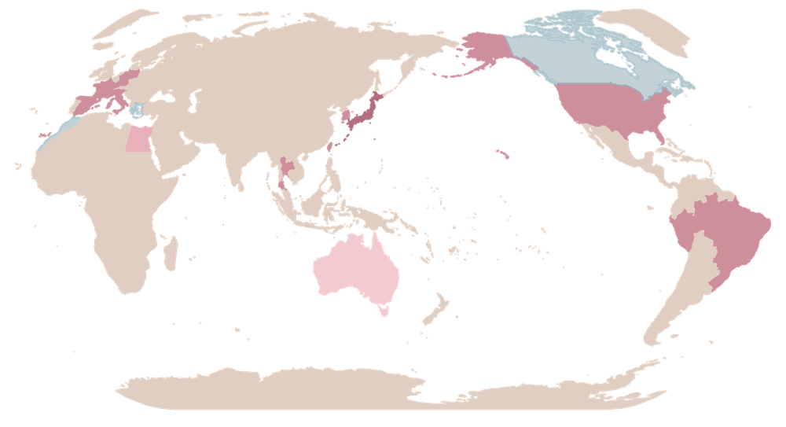
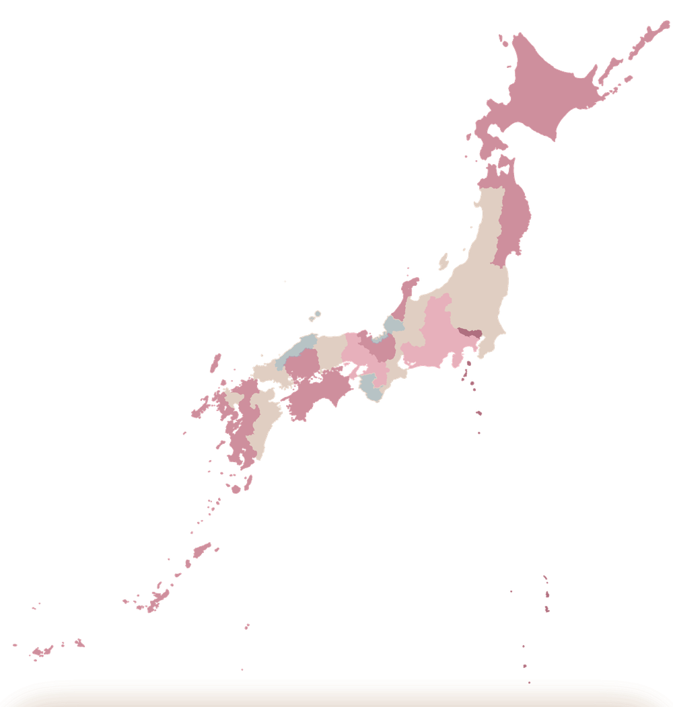
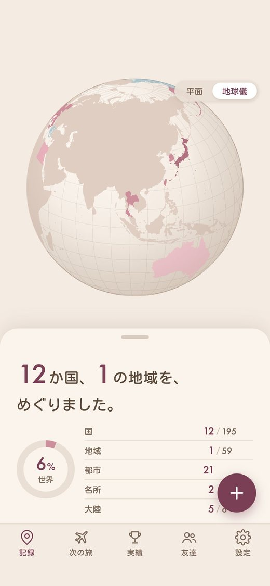

 YOUR TRAVELS
YOUR TRAVELS旅の前も、
旅のあとも、
これひとつ。


持ち物リストと行き先の情報で、旅の準備を。帰ってきたら、行った場所を地図に色づけて残せます。

YOUR TRAVELS

持ち物リストと行き先の情報で、旅の準備を。帰ってきたら、行った場所を地図に色づけて残せます。
行った都道府県が、地図に色づきます。
都道府県をいくつでも選んで、日付・タグ・過ごし方などを残せます。保存すると、地図に色が増えます。
都道府県を押すと、その中の市区町村や、新幹線・空港まで見られます。
行った都道府県が、切手になって並びます。リストと切手を、切りかえられます。
国は195か国。「平面」と「地球儀」を切りかえて眺められます。
国を押すと、行った都市や名所を記録できます。
年ごとの旅を、ひと目で見返せます。
友達から受け取った旅も、同じタイムラインに並べられます。
行き先と日付を入れるだけ。周遊の旅も入れられます。
だれと行くか・何をするか・いつもの持ち物を選ぶと、それに合わせて持ち物リストができます。
チェックしながら準備。自分で足すこともできます。
出発前にやること・お金・服装・時差・コンセントなどが分かります。
ビザや入国のきまりを、くわしく見られます。
周遊の旅は、国ごとに情報を見られます。
4つの形で並べられ、出発までの日数も分かります。
ほかにも：旅のあとに「旅の記録に追加」で、世界の記録にできます。持ち物リストは、文章にして共有できます。国内の旅では、住んでいる都道府県からの所要時間や、この時期の見どころ・名物も見られます。出発の10日前ごろからは、天気予報も出ます。
レベル・バッジ・画像づくりが、ひとつの画面に集まります。
日本と世界で、それぞれレベル・バッジ・画像があります。
旅が増えると、レベルが上がります（10段階）。次のレベルまで、あと何か国・何県かも分かります。
訪れるたびに、バッジが集まります。
バッジを押すと、次の目標が分かります。
訪れた数やバッジ、地図を、好みの見た目のカードに。
はんこのようなスタンプも選べます。カメラで撮った写真にも重ねられます。
できた画像は、そのままSNSに投稿したり、写真に保存したりできます。
友達から届いた旅のファイルを開くと、受け取れます。
旅のくわしい内容を見て、自分の記録にコピーできます。
「くわしく」「みじかく」を選べます。
友達ごとに、旅をまとめて見られます。
受け取った旅が、年ごとに並びます。
自分が友達に送った旅の履歴が残ります。
名前と写真で、友達を追加できます。
旅を送るときは、旅の画面から、メッセージやAirDropなどで、ファイルにして送ります。
お使いのiPhoneの中だけに保存されます。運営者が記録をお預かりすることはありません。機種変更や、アプリの削除の前には、バックアップをおすすめします。
設定の「バックアップ」で「バックアップを作る」を押すと、記録・設定・写真が1つのファイルになります。ファイルアプリやiCloud Driveなどに保存して、新しいiPhoneでは、同じ画面の「バックアップから戻す」を押します。
設定の「プレミアム」で「購入を復元」を押してください。購入したときと同じApple Accountでサインインしていれば、もう一度使えるようになります。
iPhone（iOS 16以降）で使えます。iPad版は、いまのところありません。